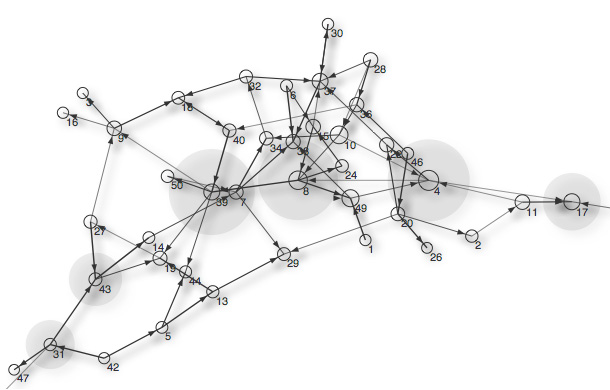

pattern.graph
The pattern.graph module offers a way to represent and analyze networks of linked data. It can be used to (for example) model semantic relationships between words. It comes bundled with a JavaScript generator to create an aesthetically pleasing visualization of a network in a web page.
It can be used by itself or with other pattern modules: web | db | en | search | vector | graph.

Documentation
Node
The Node object represents an element in the graph with a unique id (either str or int). The id is drawn as a text label when the graph is visualized (see the renderer below) – unless the optional text parameter is False. Otherwise, the text parameter defines the label color as an RGBA-tuple with values between 0.0-1.0, by default (0,0,0,1). Optional parameters include: fill, stroke, strokewidth, text, font, fontsize, fontweight to style the node.
node = Node(id="", radius=5, **kwargs)
node.graph # Parent Graph.
node.edges # List of Edge objects.
node.links # List of Node objects.
node.id # Unique string or int.node.x # Horizontal offset.
node.y # Vertical offset.
node.force # Vector, updated by Graph.layout.
node.radius # Default: 5
node.fill # Default: None
node.stroke # Default: (0,0,0,1)
node.strokewidth # Default: 1
node.text # Text object, or None.node.weight # Eigenvector centrality (0.0-1.0).
node.centrality # Betweenness centrality (0.0-1.0).node.flatten(depth=1) # List of linked nodes + self.
- Node.links.edge(node) yields the Edge connecting this node to the given node.
- Node.flatten() returns a list with the node itself (depth=0), directly connected nodes (depth=1), nodes connected to those nodes (depth=2), and so on.
Node weight and centrality
- Node.centrality indicates the node's passing traffic (or betweenness centrality): how often it occurs in shortest paths, as a value between 0.0-1.0. Highly trafficked nodes can be thought of as hubs, landmarks, crossroads, etc.
- Node.weight indicates the node's incoming traffic or (eigenvector centrality): how many nodes are connected to it, as a value between 0.0-1.0. Nodes that (indirectly) connect to high-scoring nodes get a better score themselves. In this case the edge direction plays an important role: ideally, everyone is pointing at you and you are pointing at no-one, meaning that you are at the top of hierarchy.
Reference: NetworkX (2008). Barnes, C. (2005), simplified Dijkstra. Brandes, E. (2001), faster betweenness.
Edge
The Edge object represents a connection between two nodes. Its weight indicates the importance (not the cost) of the connection. Edges with a higher weight are preferred in shortest paths. Optional parameters include stroke and strokewidth, used to style the visualization (see the renderer below).
edge = Edge(node1, node2, weight=0.0, length=1.0, type=None, **kwargs)
edge.node1 # Node (sender).
edge.node2 # Node (receiver).
edge.weight # Connection strength.
edge.length # Length modifier when drawn.
edge.type # Useful in semantic networks.
edge.stroke # Default: (0,0,0,1)
edge.strokewidth # Default: 1
Directed edges
- An edge can be traversed in both directions: node1 → node2 and node2 → node1. Some methods (for example Graph.shortest_path() and Graph.betweenness_centrality()) have a directed parameter which when set to True, regards an edge as going only in one direction: node1 → node2. This obviously produces different paths and node weights.
- Two nodes can be connected by at most two edges (one in each direction). Otherwise, calling Graph.add_edge() simply returns the edge that already exists between the given nodes.
Graph
The Graph object is a network of nodes connected by edges.
graph = Graph(layout=SPRING, distance=10.0)graph[id] # Node with given id (Graph is dict subclass).
graph.nodes # List of Node objects.
graph.edges # List of Edge objects.
graph.root # Node or None.
graph.density # <0.35 => sparse, >0.65 => dense
graph.distance # Overall layout spacing.
graph.layout # GraphSpringLayout.graph.add_node(id, *args, **kwargs, root=False) # Creates + returns new Node.
graph.add_edge(id1, id2, *args, **kwargs) # Creates + returns new Edge.
graph.remove(node)
graph.remove(edge)graph.betweenness_centrality() # Updates all Node.centrality.
graph.eigenvector_centrality() # Updates all Node.weight. graph.shortest_path(node1, node2, heuristic=None, directed=False)
graph.shortest_paths(node, heuristic=None, directed=False)
graph.paths(node1, node2, length=4)
graph.sorted(order=WEIGHT, threshold=0.0)
graph.prune(depth=0)
graph.fringe(depth=0)
graph.split()
graph.copy(nodes=ALL)graph.update(iterations=10, weight=10, limit=0.5)
- Graph.add_node() has an optional base parameter which can be a subclass of Node to use.
- Graph.add_edge() has an optional base parameter which can be a subclass of Edge to use.
- Graph.shortest_path() returns a list of nodes connecting two nodes.
- Graph.shortest_paths() returns a dictionary of nodes linked to shortest path.
With directed=True, edges are only traversable in a single direction.
A heuristic function can be given that takes two node id's and returns an additional cost for movement between the two nodes. - Graph.paths() returns a list of paths <= length connecting the two nodes.
- Graph.sorted() returns a list of nodes sorted by WEIGHT or CENTRALITY.
If the value falls below the given threshold, the node is excluded from the list. - Graph.prune() removes all nodes with less or equal links than depth.
- Graph.fringe() returns a list of leaf nodes.
With depth=0, returns the nodes with only one connection.
With depth=1, returns the nodes with one connection + their connections, etc. - Graph.split() returns a list of unconnected subgraphs.
- Graph.copy() returns a new graph from the given list of nodes.
For example:
>>> from pattern.graph import Graph
>>> g = Graph()
>>> for n1, n2 in (('cat','tail'), ('cat','purr'), ('purr','sound'),
>>> ('dog','tail'), ("dog","bark"), ("bark","sound")):
>>> g.add_node(n1)
>>> g.add_node(n2)
>>> g.add_edge(n1, n2, weight=0.0, type='is-related-to')
>>> print g.sorted()
[Node(id='sound'), Node(id='tail'), Node(id='bark'), Node(id='purr')]
|
When sorted by node weight (i.e. eigenvector centrality), sound is the most important node in the network. This is easier to grasp if we look at the visualization on the right. Most nodes are pointing at sound or tail. No nodes are pointing at dog or cat, so these are the least important in the network (weight=0). We could say that the (directed!) network is not about dogs and cats, but primarily about the sounds these animals make, so it is about sound. |
 |
Graph layout
A GraphLayout object calculates node positions (Node.x, Node.y) iteratively each time GraphLayout.update() is called. Currently, the only available implementation is GraphSpringLayout, which uses a force-based algorithm where edges are regarded as springs. The forces are applied to the nodes, pulling them closer together or pushing them further apart.
layout = GraphSpringLayout(graph)layout.graph # Graph owner.
layout.iterations # Starts at 0, +1 on each update().
layout.bounds # (x, y, width, height)-tuple.
layout.k # Force constant (4.0)
layout.force # Force multiplier (0.01)
layout.repulsion # Maximum repulsion radius (15)layout.update(weight=10.0, limit=0.5) # weight = Edge.weight multiplier.
layout.reset()
layout.copy(graph)
Reference: Hellesoy, A. & Hoover, D. (2006). http://ajaxian.com/archives/new-javascriptcanvas-graph-library
Graph adjacency
Utility commands to modify graph edges, while keeping Graph.edges and Node.links in synch:
unlink(graph, node1, node2=None)redirect(graph, node1, node2)cut(graph, node)insert(graph, node, a, b)
- unlink() removes the edges between node1 and node2.
If only node1 is given, removes all edges to + from it. This does not remove node1 from the graph. - redirect() connects all of node1's edges to node2 and unlinks node1.
- cut() unlinks the given node, but keeps edges intact by connecting the surrounding nodes.
If A, B, C, D are nodes and A → B, B → C, B → D, if we then cut B: A → C, A → D. - insert() inserts the given node between node a and node b.
If A, B, C are nodes and A → B, if we then insert C: A → C, C → B.
Edge adjacency map
The adjacency() command returns a map of linked nodes:
adjacency(graph,
directed = False,
reversed = False,
stochastic = False,
heuristic = lambda node1, node2: 0)
The return value is a dictionary indexed by node id1's, in which each value is a dictionary of connected node id2's linking to the edge weight. If directed=True, edges go from id1 to id2, but not the other way. If stochastic=True, all the weights for the neighbors of a given node sum to 1.
A heuristic function can be given that takes two node id's and returns an additional cost for movement between the two nodes.
Edge traversal
The bfs() command (breadth-first search) visits all the nodes connected to the given node.
The dfs() command (depth-first search) visits all the nodes connected to the given node depth first, i.e. as far as possible along each branch before backtracking.
bfs(node, visit=lambda node: False, traversable=lambda node, edge: True)
dfs(node, visit=lambda node: False, traversable=lambda node, edge: True)
The visit function is called on each node. Recursion will stop if it returns True, and subsequently the command will return True.
The traversable function takes the current node and edge and returns True if we are allowed to follow this connection to the next node. For example, the traversable for directed edges is follows:
lambda node, edge: node == edge.node1
HTML <canvas> renderer
To visualize a graph, we need a drawing engine (e.g. Flash). The Graph, Node and Edge classes are identical to those in NodeBox for OpenGL, a cross-platform Python animation toolkit, so graphs can be rendered in NodeBox without effort. Another option is to export the graph to a web page: the <canvas> element is part of HTML5 and allows for dynamic, scriptable rendering of 2D shapes and bitmap images.
Exporting as a web page
The export() command creates a folder at the given path containing an index.html that visualizes the graph using canvas.js. The folder also has a style.css stylesheet and a js/ subfolder with a compressed graph.js (full JavaScript implementation of pattern.graph) and canvas.js. If an optional parameter js is given, it is expected to be a URL path to graph.js + canvas.js (subfolder will not be included in this case).
export(graph, path, overwrite=False, encoding='utf-8', **kwargs)
For example:
>>> from pattern.graph import Graph, export
>>> g = Graph()
>>> for n1, n2 in (('cat','tail'), ('cat','purr'), ('purr','sound'),
>>> ('dog','tail'), ("dog","bark"), ("bark","sound")):
>>> g.add_node(n1)
>>> g.add_node(n2)
>>> g.add_edge(n1, n2, weight=0.0, type='is-related-to')
>>> export(g, 'sound', directed=True)
Nodes and edges will be styled according to their fill, stroke, and strokewidth.
Many optional parameters can be given to customize the visualization:
| Parameter | Default | Description |
| javascript | 'js/' | Path to canvas.js + graph.js. |
| stylesheet | INLINE | None, INLINE, DEFAULT (style.css) or custom path. |
| title | 'Graph' | Generates <title>Graph</title>. |
| id | 'graph' | Generates <div id="graph"> containing <canvas>. |
| ctx | 'canvas.element' | HTML <canvas> element used for drawing. |
| width | 700 | Canvas width in pixels. |
| height | 500 | Canvas height in pixels. |
| frames | 500 | Number of frames of animation. |
| fps | 30 | Frames per second. |
| ipf | 2 | GraphLayout.update() iterations per frame. |
| weighted | False |
Indicate betweenness as a shadow? (bool or float %) |
| directed | False | Indicate edge direction with an arrow? |
| prune | None | None or int, calls Graph.prune() in JavaScript. |
| pack | True | Shortens leaf edges & adds node weight to node radius. |
| distance | 10 | Node spacing. |
| k | 4.0 | Force constant. |
| force | 0.01 | Force dampener. |
| repulsion | 50 | Repulsive force radius. |
| weight | [WEIGHT,CENTRALITY] | Calculate these in Python, or True (in JavaScript), or False. |
| href | {} | Dictionary of Node.id => URL. |
| css | {} | Dictionary of Node.id => CSS classname. |
| default | {'radius': 5, 'fixed': False, 'fill': None, 'stroke': (0,0,0,1), 'strokewidth': 1, 'text': (0,0,0,1), 'fontsize': 11 } |
To save bandwidth, Node and Edge attributes are only passed to JavaScript if they differ from the default. |
Rendering as a HTML string
Separate parts of the HTML can be generated dynamically with the render() command.
This is useful if you have a HTML template and you want to load nodes and edges on-the-fly.
render(graph, type=HTML, **kwargs) # Same optional parameters as export().
| Type | Return value |
| DATA | JavaScript string that loads the Graph into var g. |
| SCRIPT | DATA + prune + pack + weights + a call to draw() to start the animation. |
| STYLE | CSS string with a minimal style for <div id="graph">. |
| CANVAS | HTML string with a <div id="graph"> containing <script type="text/canvas">. |
| HTML | SCRIPT + STYLE + CANVAS bundled in a HTML document. |
Static vs. dynamic
The most exhaustive graph operations are the spring layout, GraphSpringLayout.update(), and calculating weights: Graph.betweenness_centrality() and Graph.eigenvector_centrality(). The latter two are called automatically the first time you fetch Node.weight or Node.centrality. You can opt to do some or all of the calculations in Python (i.e. server-side) or in JavaScript (i.e. client-side).
- If the nodes and edges are updated dynamically, calculate the weights client-side.
- If the nodes and edges never change, calculate the weights in Python and export once:
export(graph, path, weights=[WEIGHT, CENTRALITY]). - If you don't need fancy animation, calculate node positions in Python and export as a single frame:
export(graph, path, frames=1, ipf=0). - Choose good default values to minimize data passed from Python to JavaScript.
JavaScript library: graph.js
Below is a concise standalone demonstration of graph.js (co-authored by Daniel Friesen). With standalone we mean that it is not generated with export() and does not rely on canvas.js. Only graph.js is required.
The implementation of graph.js is identical to the Python module, except for some naming conventions (e.g. Graph.eigenvector_centrality() is written as Graph.eigenvectorCentrality() in JavaScript), optional parameters, and the addition of the Graph.loop() method which starts the interactive animation (view live demo):
<!DOCTYPE html>
<html>
<head>
<meta http-equiv="Content-Type" content="text/html; charset=utf-8" />
<script type="text/javascript" src="graph.js"></script>
<script type="text/javascript">
function init_graph() {
g = new Graph(document.getElementById("_ctx"));
for (var i=0; i < 50; i++) { // Random nodes.
g.addNode(i+1);
}
for (var i=0; i < 75; i++) { // Random edges.
var node1 = choice(g.nodes);
var node2 = choice(g.nodes);
g.addEdge(node1, node2, {weight: Math.random()});
}
g.prune(0);
g.betweennessCentrality();
g.eigenvectorCentrality();
g.loop({frames:500, fps:20, ipf:2, weighted:0.5, directed:true});
}
</script>
<style type="text/css">
#graph { display: block; position: relative; overflow: hidden; }
.node-label { font: 11px sans-serif; }
</style>
</head>
<body onload="javascript:init_graph();">
<div id="graph" style="width:700px; height:500px;">
<canvas id="_ctx" width="700" height="500"></canvas>
</div>
</body>
</html>

Loading excanvas.js in the <head> enables support for Internet Explorer 6-8:
<!--[if lte IE 8]><script type="text/javascript" src="/js/excanvas.js"></script><![endif]-->